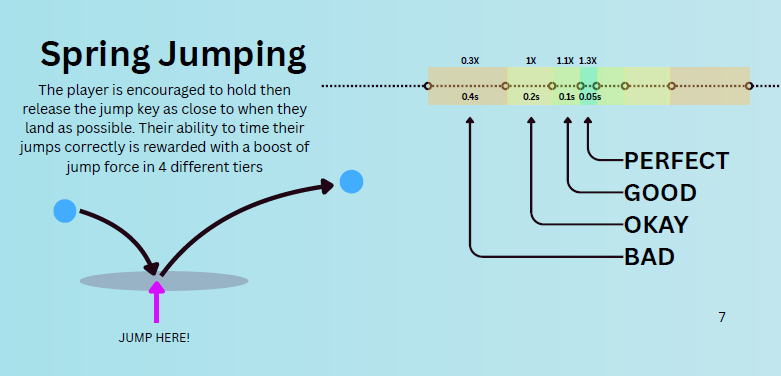

Samuel Cutts
DESIGN PROCESS
The "Pipeline"
Design is a highly diverse and hard-to-pin-down discipline. You have to consider a myriad of factors that are often unique to the individual project (pacing, aesthetics, player feedback, difficulty, progression, goals, story, etc.). Because of this, there is no single "correct" way to tackle a problem. I have gained proficiency in a mechanics-first approach, utilizing the iterative method and rigorous playtesting to reach my design goals.
Ideation
I start my process with research - mostly by creating mind maps and gathering inspiring images and videos to associate the material with potential emotions, mechanics, and themes. In this phase, the freakier a source is, the more inspiring it can be. Inspiration can come from absolutely anything; often, the most emotive sources produce the wildest ideas, which frequently turn into the most engaging mechanics.
Prototyping
My intuition is usually a bad indicator of how good an idea actually is, so I build quick prototypes to test those concepts out! I make heavy use of GIF recordings and detailed note-taking to build out my documentation. I also rely on source control to seamlessly switch between variations, allowing me to try out different ideas without losing previous work.
Assessment
Playtesting and solo testing are an automatic part of my routine, but I always seek feedback from as many people as possible; there is always some oversight when designing in isolation. Watching people play, taking notes, and asking open-ended questions always yields surprising results and reveals things I didn't think of. I focus heavily on this early in development to ensure the project is heading in the right direction, which is when the most impactful changes can still be made.
habits and improvements
Some of the habits I have cultivated include keeping a journal for my personal and professinal projects. One of my biggest struggles with designing is tunnel vision. I'll often hyperfocus on a single mechanic or element in lieu of the whole experience. Though with colleagues I'm constantly talking through my process and so this can be resolved fairly quickly. A major goal I've set for myself is learning to define good enough in the scope of a project. Re-evaluating myself often has been instrumental here.
_______________________________Documentation
Documentation is an important part of keeping our process accountable and actionable. I make use of charts and diagrams to visualize mechanics and their interactions, while maintaining detailed lists of mechanics throughout the development process.
Here is an additional excerpt from a game design document I built for a previous project, ULTRASPRING. You can read the entire document here.

It's important when writing and maintaining documentation that the thought process behind the mechanics and systems is as unambiguous as possible. Therefore where possible I explain my thought process with either diagrams, math formula or snippets of code to explain my process.
Here is an exerpt from a Game Design Document that I co-wrote for an underwater vr game actually played underwater. Alternatively the entire GDD can be read here. My contribtion was the second chapter, regarding the game mechanics.